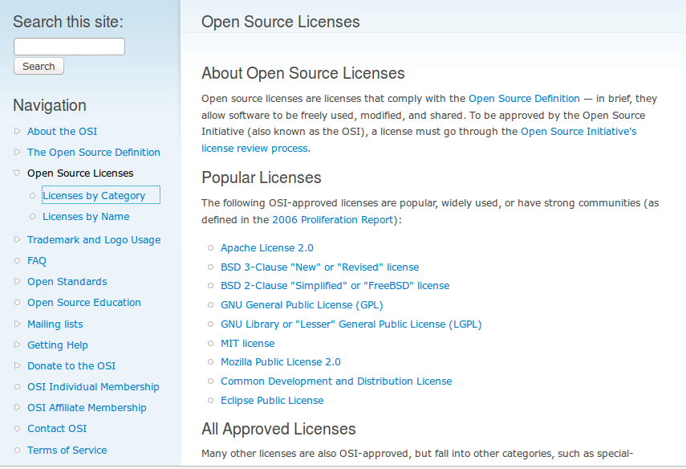

從開放源碼的理想到提供源碼的義務

【四大自由理念延伸出提供源碼的義務】
開發者彼此間自由地分享、討論與修改所撰寫的軟體程式碼並非是近代才有的現象，早在資訊科學發跡的年代，就已經有著這種的互動模式。不過將這種風氣與背後所代表的精神，彙整成為有系統的概念，則是肇始於自由軟體與四大自由的出現，因此要釐清開放源碼與提供源碼這兩個概念的關係，就必須要先說明這兩個概念的共同源頭－自由軟體 (Free Software) 與其所代表的四大自由理念。
自由軟體是由 Richard Stallman（註二）所創的名詞，其英文為 "Free Software"。而之所以稱其為「自由 (free)」軟體，是為了凸顯這類軟體尊重使用者自由意志的特性，因此若是一位軟體使用者對其所持有的軟體，擁有下面所列的四大自由，那麼此一軟體就可被指稱為自由軟體（註三）：
【自由之零】為了任何目的執行程式的自由。
【自由之一】研究程式如何運作的自由，並且將程式修改符合本身的需求。源碼的近用 (access to the Source Code) 是實現這個自由的前提要件。
【自由之二】再次散布程式的自由，並用以幫助鄰居。
【自由之三】將自己修改的版本散布給他人的自由，而透過此舉，使用者可以讓整個社群均有機會因為他的修改內容而受益。源碼的近用 (access to the Source Code) 是實現這個自由的前提要件。
從四大自由的理念，可以看到自由之一與自由之三的前提要件都是「源碼的近用 (access to the Source Code) 」，因為程式源碼 (Source Code) 可說是軟體被撰寫出來的原始格式，也因此是最適合被拿來進行後續研究與修改的格式。而這邊所謂的近用是指軟體使用者必須可以「接近、取得與利用」程式源碼。因此可以了解到，自由軟體與四大自由的理念是建立在使用者取得程式源碼的基礎之上，依照這樣的理念與基礎，軟體使用者一旦取得了一個自由軟體，那麼他也就必須要有地位取得軟體的程式源碼，如此使用者才得以研究、修改、重製與散布程式源碼，進而實踐四大自由的理念。因此，當四大自由落實到實際的授權條款文字時，就出現了程式源碼必須要提供給予使用者的義務規定，也就是說，從軟體第一次被散布的時候開始，開發者或者散布者就負有提供源碼給予使用者的義務。而這就是自由開源軟體領域中，提供源碼義務的的歷史緣由。當然開發者或散布者也可以主動將程式源碼「開放」或者「公開分享」出來，例如放在網路上供其他不特定人亦可自由下載利用，只是這樣的作法是比四大自由所要求標準更高的方式，卻並非是四大自由所寄望一定要達到的標準。
【提供源碼義務在授權條款中有著嚴寬不同的規定】
簡要的說，只要開發者在散布軟體時將程式源碼給予使用者，並讓使用者可以使用、修改、重製與散布軟體，這樣的軟體就是符合四大自由理念的自由軟體。更多的相關資訊，可以參照自由軟體基金會 (Free Software Foundation, FSF) 所羅列的自由軟體授權條表（註四）。該基金會收集符合四大自由的授權條款，並且將這些條款表列在網站上，供開發者參考（註五）。這個表列中的授權條款，都有一個共通的基本特性，那就是開發者或著作權人在初始散布程式時，必須將程式源碼提供給予使用者來自由利用，至於使用者再次散布軟體時是否得接續提供原程式或衍生程式的程式源碼，則不同授權條款可能會有不同的規定。以著名的 GNU General Public License (GPL) 與 GNU Lesser/Library General Public License (LGPL) 為例（註六），不僅軟體開發者或著作權人本身負有提供程式源碼的義務，持有軟體的使用者再次散布軟體時，也一樣負有提供源碼給後手的義務。但是像由學術機構制定的 BSD、MIT 等授權條款，就沒有強制規定使用者在程式的接續散布上，也延續兼負有提供程式源碼的義務，因為此時使用者若是無意接續提供程式源碼，僅需聲明此後散布的程式改以和 BSD、MIT 相容的他種授權方式，或者商業授權方式來提供即可達到這個目標。Google 這幾年大力推廣的 Apache License Version 2.0 (Apache-2.0)，與 BSD、MIT 相校，增補了不少專利權與商標權運用方面的規則，但在使用者是否必須接續提供程式源碼的規定上，也是與 BSD、MIT 有著相同的規定。此外，還有些介於這兩類中間的授權條款，例如 Mozilla Public License (MPL) 以及 Eclipse Public License (EPL)，這類條款規定使用者在散布軟體時，原以 MPL 與 EPL 授權的部份，接續散布上仍然必須要提供程式源碼，但是在專案裡非衍生關係的獨立檔案 (file) 或獨立模組 (module)，則可以由檔案與模組的撰寫者自行決定是否提供該部份的程式源碼給收受整體專案的後手。
上述這些授權條款的運作方式，都有一個共通點，那就是，雖然自由軟體與四大自由理念，強調使用者都必須要有可以近用程式源碼的地位，才能達到真正的軟體自由 (Software Freedom)，但是在實際落實到授權條款的時候，條款內容僅皆規定開發者或著作權人在第一次散布軟體時，必須配合這個散布行為來提供程式源碼，讓後手使用者據此可以使用、修改、重製與散布該程式，至於接續散布是否必須提供程式源碼給予更後手，則是依使用條款的類型而異，並且，均沒有述及僅持有軟體程式進行內部使用，就必須不限制對象地向外「開放」。
【開放源碼從促進商業應用的目的演變成為自由開源軟體的代表辭彙】
從前文的分析可知，「四大自由」配合個別授權條款內容的解讀，導引出來的是「提供源碼」的義務，而非「開放源碼」的誡命。然而，為何當代在討論自 由開源軟體的相關議題時，「開放源碼」這個詞彙會被大家廣泛引用並且朗朗上口呢？主要是因為隨著自由軟體的散布與四大自由理念的開展，開始有公司大舉利用 此類軟體來作為商業營利的基礎，而四大自由所追求的軟體使用者自由理念，與商業公司所追求的商業利益並不完全契合，在某些表述上亦令人易產生誤解，因為 「自由 (free)」一詞在英文的演繹，同時蘊含有「自由 (freedom)」與「免費 (charge-free)」的解釋空間，甚至有使用者進一步質疑以自由軟體 (Free Software) 進行服務，會有難以收費的疑慮與風險。而呼應這個疑慮，「開放源碼 (Open Source)」一詞被創造了出來，倡議開放源碼一詞的推動者，希望透過這個較為中性的辭彙，來重新詮釋承襲自自由軟體的概念與理想（註七）。而為了促進 商業公司的利用，開放源碼一詞背後還有一套認証與商標機制配合運作，來便利商業使用者與消費者了解與辨識出開源軟體，也就是開放源碼的概念也有一套「開放 源碼定義 (Open Source Definition, OSD)」來加以界定，而一份授權條款是否符合開放源碼定義，則轉由「開放源碼促進會 (Open Source Initiative, OSI) 」這個法人組織來進行審核，一旦審核通過，OSI 就會在其網站上公開宣告該條款為開放源碼授權條款 (Open Source License)，若有軟體採用開放源碼條款授權的話，就可以在軟體與相關的文件中印上 OSI 的註冊商標，以表彰該商業產品或服務背後，有應用到開源軟體的狀態（註八）。

▲ 圖1：開放源碼促進會所公佈的開源授權條款 (Open Source Licenses)。
有趣的是，隨著開放源碼一詞因商業化應用推展而被逐漸廣泛使用，部份開放源碼軟體的使用者，開始直接以開放源碼一詞，來概括統稱自由軟體與開源軟體，事實上據統計，也確實絕大多數滿足四大自由精神的授權方式，也會同樣符合開放源碼的十項定義。但因為單憑字義沒有辦法推衍出這兩個名詞演變的歷史脈絡，導致有些使用者會純粹直接以字面上的意思來理解，認為自由開源軟體的基本精神就是要將程式源碼主動公開釋出，這樣的理解不僅超越了開源軟體實際上的傳散機制，也超越了自由軟體所代表的四大自由理念。再者，隨著九０年代全球網際網路 (World Wide Web) 相關技術的快速發展，網路成為一個非常方便的散布媒介，不少自由開源軟體專案的開發者，開始將自由開源軟體的程式源碼，透過網路進行共工與散布，除了程式開發的歷程會登載於網路上的共工平台 (repository) 外，想要利用軟體之人，亦可以直接從網站上面自行下載所需的自由開源軟體，此種方式省卻了開發者一對一散布給個別使用者的瑣碎過程，因此愈來愈多的開發者都選擇使用網路這個媒介，來散布程式源碼。演變至今，網路無國界的特性，不斷強化自由開源軟體程式源碼公開給予不特定人的印象，影響所及，在許多人的心目中，開放源碼幾乎與透過網路公開散布劃上等號，也因而讓使用者產生了，一旦自稱自由開源軟體專案，就或多或少有責任要主動將程式源碼透過網路公開的期待。
【結語：開放源碼理想與提供源碼義務共同構成完整的散布生態系】
開放源碼是一個理想，這個理想的期待，傳承自自由軟體所代表的四大自由，但是卻又與四大自由有著不同的內涵，而提供源碼義務雖然也是源自於四大自由，但卻是一個具體，且落實在授權條款中的義務性規定，隨著授權條款的不同，也會有著不同嚴寬程度的細部要求。因此，簡單來說，開放源碼這個理想，主要影響的對象是軟體開發者與著作權人，開發者或著作權人若是認同這樣的期待，便多會將其軟體程式源碼，透過網際網路等徒徑，公開且不設限的提供給不特定的使用者來下載，所以說這是一個實踐理想的過程；而提供源碼義務影響的對象則較為明確，除了開發者與著作權人之外，還包括了其他使用者，這些使用者在程式的散布行為上，是否負有提供程式源碼的義務，會隨著授權條款的細部規定而有所不同，因此這是一個落實授權義務的過程。開放源碼理想與提供源碼義務兩者相關、卻不能完全等同視之，但彼此亦不能說是衝突互斥，應該說，這兩個概念在現行自由開源軟體散布的過程中，發揮著不同的作用，一同建構出了一個完整的自由開源軟體的散布生態系。
希望透過本文的說明，可以讓讀者對於開放源碼理想與提供源碼義務這兩個概念，有較為清晰的理解，避免因為誤解辭彙的意義，而在利用自由開源軟體的過程中產生困擾。
----
感謝：本文感謝林誠夏潤飾文字。
----
註一：部份評論家認為，談論到自由開源軟體理念的時候，應該要將重點放在實踐軟體「自由 (freedom)」的目標上，因為開放源碼只是一個在這個實踐過程中所產生的現象，所以一般來說，會以自由開源軟體這樣折衷的辭彙來表述此一類型的軟體。筆者基本上也認同這樣的看法，不過本文已針對自由軟體與四大自由的內涵加以說明，且論述重點是在於釐清「開放源碼理想」與「提供源碼義務」的不同，故標題採用「開放源碼」，以明確點出討論的問題焦點。
註二：Richard Stallman 的個人網站：https://stallman.org/，關於他的詳細介紹可以參見維基百科條目：https://en.wikipedia.org/wiki/Richard_Stallman。
註三：關於自由軟體 (Free Software) 的歷史介紹，可以參見英文維基百科 "Free Software" 條目的說明內容：https://en.wikipedia.org/wiki/Free_software；關於自由軟體的定義闡釋與四大自由的原文內容，請參閱 Richard Stallman 所撰寫的 "The Free Software Definition" 一文：https://www.gnu.org/philosophy/free-sw.html，在此則附上四大自由的英文原文供讀者參考：
- The freedom to run the program, for any purpose (freedom 0).
- The freedom to study how the program works, and change it so it does your computing as you wish (freedom 1). Access to the source code is a precondition for this.
- The freedom to redistribute copies so you can help your neighbor (freedom 2).
- The freedom to distribute copies of your modified versions to others (freedom 3). By doing this you can give the whole community a chance to benefit from your changes. Access to the source code is a precondition for this.
註四：不過這並不代表四大自由允許授權條款限制使用者，在嗣後的散布行為中，決定是否提供程式源碼的自由，若是一份條款強制規定使用者雖然可以自由使用、修改軟體，卻不能自由決定是否可以散布軟體，依許多論者的意見與看法，這樣的軟體便不符合四大自由的理念，不能自稱為自由軟體。
註五：自由軟體授權條款列表請參見：https://www.gnu.org/licenses/license-list.html#SoftwareLicenses。
註六：GPL 與 LGPL 是 Richard Stallman 與自由軟體基金會合作，制定出來授權軟體程式碼的條款，此外自由軟體基金會亦延申制訂出適用於軟體說明文件的 GNU Free Documentation License (GFDL)，並且將這些條款用於與自由軟體基金會互為表裡的 GNU 計畫 (GNU Project) 中， Richard Stallman 意欲透過 GNU 計畫與這些授權條款打造出一套完整的自由軟體作業系統。而由於授權條款最初就是用來授權 GNU 計畫的軟體，也因此這些條款的全名前面也都冠有 GNU 一詞。GNU 計畫網站：https://www.gnu.org。
註七：關於開放源碼 (Open Source) 一詞的由來，請參見開放源碼促進會 (Open Source Initiative, OSI) 網站上的緣由說明：https://opensource.org/history；此外，Bruce Perens 也曾發表專文對此說明：The Open Source Definition, https://oreilly.com/openbook/opensources/book/perens.html, at book " Open Sources: Voices from the Open Source Revolution", 1st Edition January 1999。其中 Perens 在該文 "History" 段落的第一句就表示「自由軟體是一個舊的概念 (The concept of free software is an old one.)」，揭露 OSI 將在其基礎上推動「開放源碼 (Open Source)」這個新的名詞與實踐方式。
註八：OSD 的內容請見：https://opensource.org/osd；OSI 的商標政策請參見：https://opensource.org/trademark。
自由軟體鑄造場電子報 : 第 231 期 從開放源碼的理念到提供源碼的義務
標籤: open source, free software, providing source code, obligation, OSI, 開放源碼, 提供源碼, 四大自由, 自由軟體, 開源軟體, 開放源碼促進會,
分類: 法律專欄